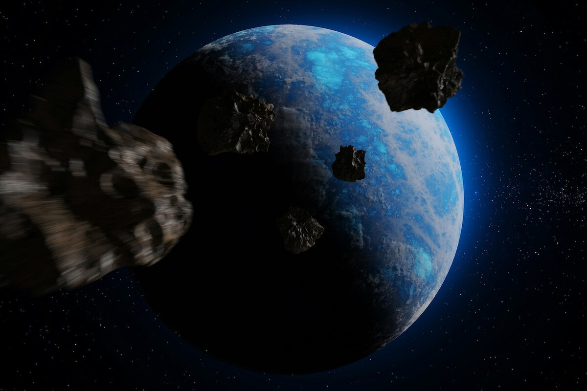

Del mismo modo que los aparatos electrónicos generan pequeños campos magnéticos, nuestro planeta entero está recubierto por uno, que nos ayuda a orientarnos y mantenernos relativamente estables en el espacio. Pero, ¿qué es exactamente el campo magnético de la Tierra?, ¿y cómo se comporta?
¿Alguna vez te has preguntado qué es el campo magnético de la Tierra? Es el campo magnético que se extiende desde el núcleo interno de la Tierra hasta el límite en el que se encuentra con el viento solar; una corriente de partículas energéticas que emana del Sol. Su magnitud en la superficie de la Tierra varía de 25 a 65 µT (microteslas) o (0,25-0,65 G).
Se puede considerar en aproximación el campo creado por un dipolo magnético inclinado un ángulo de 10 grados con respecto al eje de rotación (como un imán de barra). Sin embargo, al contrario que el campo de un imán, el campo de la Tierra cambia con el tiempo porque se genera por el movimiento de aleaciones de hierro fundido en el núcleo externo de la Tierra (la geodinamo). Al cabo de ciertos periodos de duración aleatoria (con un promedio de duración de varios cientos de miles de años), el campo magnético de la Tierra se invierte (el polo norte y sur geomagnético permutan su posición). Estas inversiones dejan un registro en las rocas que permiten a los paleomagnetistas calcular la deriva de continentes en el pasado y los fondos oceánicos resultado de la tectónica de placas.
La región por encima de la ionosfera —que se extiende varias decenas de miles de kilómetros en el espacio— es llamada la magnetosfera. Esta nueva capa protege a la Tierra de los rayos cósmicos que destruirían la atmósfera externa, incluyendo la capa de ozono que protege a la Tierra de la dañina radiación ultravioleta.
Desplazamiento de los polos magnéticos
El polo norte magnético se desplaza, pero de una manera suficientemente lenta como para que las brújulas sean útiles en la navegación.
Al cabo de ciertos periodos de duración aleatoria (con un promedio de duración de varios cientos de miles de años), el campo magnético de la Tierra se invierte (el polo norte y sur geomagnético permutan su posición). Estas inversiones dejan un registro en las rocas que permiten a los paleomagnetistas calcular la deriva de continentes en el pasado y los fondos oceánicos resultado de la tectónica de placas.

La Nasa, 1 febrero 2022
Por qué es importante. Por física del instituto: ya hemos visto que hay objetos de todo tipo y tamaño, pero es que la mayoría de ellos viajan a más de 27.000 km/h y a esa velocidad incluso el trozo más pequeño puede ser letal. Por poner en contexto: un fragmento de un kilogramo impactando a 10 km/s alberga una energía cinética de 50 MJ, es decir, su equivalencia en TNT son 12 kg de explosivo, suficiente para destruir completamente todo un satélite de varias toneladas.